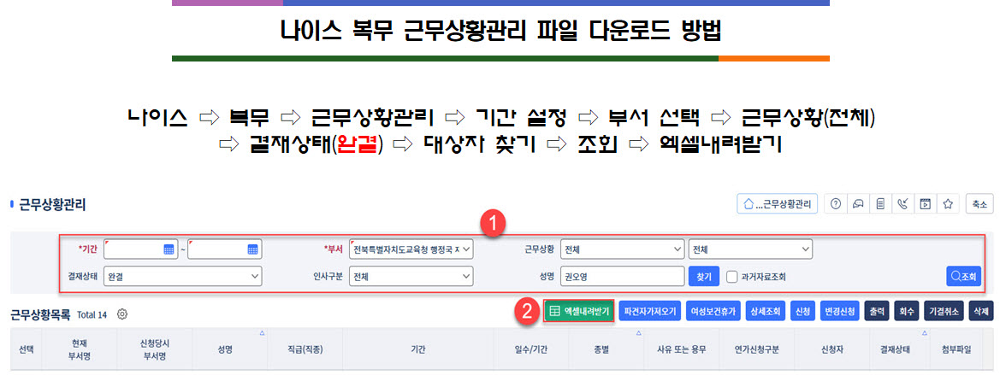

나이스 복무 근무상황관리 파일 다운로드 방법
종별 기간 계산기에 사용할 나이스 엑셀파일 내려받기 안내
이동 경로
나이스에 로그인한 뒤 다음 순서로 근무상황관리 화면을 엽니다.
나이스→복무→근무상황관리
파일 내려받기 순서
- 조회 조건 설정기간을 지정하고 부서, 근무상황, 결재상태, 인사구분 및 성명 조건을 선택합니다.
- 결재상태 확인계산 대상이 확정된 자료라면 결재상태를 완결로 설정합니다.
- 대상자 조회필요하면 성명을 입력해 대상자를 찾은 뒤 오른쪽의 조회 버튼을 누릅니다.
- 엑셀 내려받기조회 결과가 표시되면 목록 위의 초록색 엑셀내려받기 버튼을 누르고 파일을 저장합니다.
- 계산기에 파일 불러오기저장한 파일을 종별 기간 계산기의 파일 불러오기 버튼으로 선택합니다.
안내 이미지의 예시는 특정 사용자와 부서를 보여주기 위한 화면입니다. 실제 이용 시 본인의 권한과 조회 대상에 맞게 조건을 설정하세요.
원본 안내 화면

① 기간·부서·근무상황·결재상태 등 조회 조건 설정 및 조회 → ② 엑셀내려받기
불러오기 전 확인
- 파일 확장자는 .xlsx, .xls 또는 .csv인지 확인합니다.
- 첫 번째 시트에 종별과 일수/기간 열이 포함되어 있어야 합니다.
- 파일 내용을 임의로 삭제하거나 열 이름을 변경하지 않은 원본을 사용하는 것이 안전합니다.